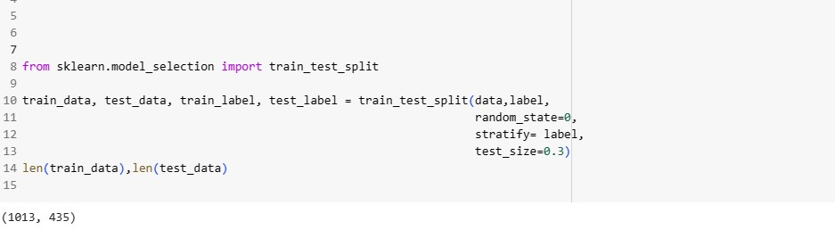
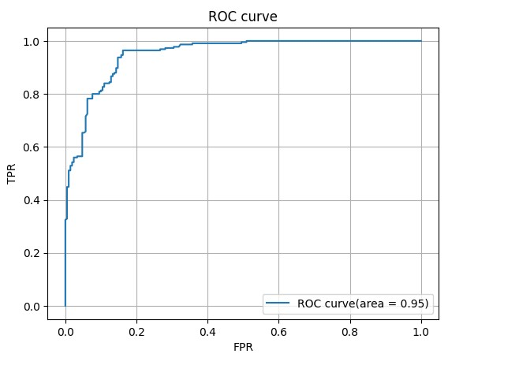

Given:
- customer information dataset which include information such as deposit, age, family member, etc..
use:
- Classification model
- I decided to use support vector machine in this project
Approach:
- Analyze dataset and examine how to format data.
For example, when I analyze deposit information, I normalized the dataset to make it into number between -1 and 1
normalized_deposit = (deposit - mean value)/ std
- Import SVM model from sklearn and put data into it

Review model:
- ROC curve
below is the visual representation of ROC curve
